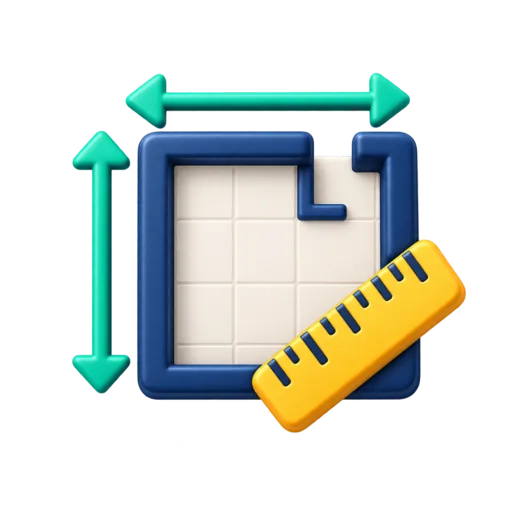

FERRAMENTA GRATUITA
Conversor de área
Converta medidas de terrenos, imóveis, pisos e ambientes entre unidades métricas e imperiais.

Resultado
Informe um valor e escolha as unidades.
Como converter área
A ferramenta converte centímetros quadrados, metros quadrados, quilômetros quadrados, hectares, pés quadrados, jardas quadradas e acres.
Conversões comuns
1 hectare = 10.000 m².
1 acre ≈ 4.046,86 m².
1 m² ≈ 10,7639 ft².
Exemplo
Um terreno de 1 hectare possui 10.000 m². Já 100 m² correspondem a aproximadamente 1.076,39 pés quadrados.
Quando usar
O conversor é útil ao comparar imóveis, terrenos, plantas, anúncios internacionais e medidas de obra.
Veja também o conversor de comprimento, a calculadora de piso e rejunte e a calculadora de concreto.